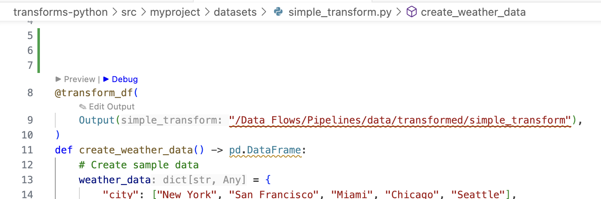
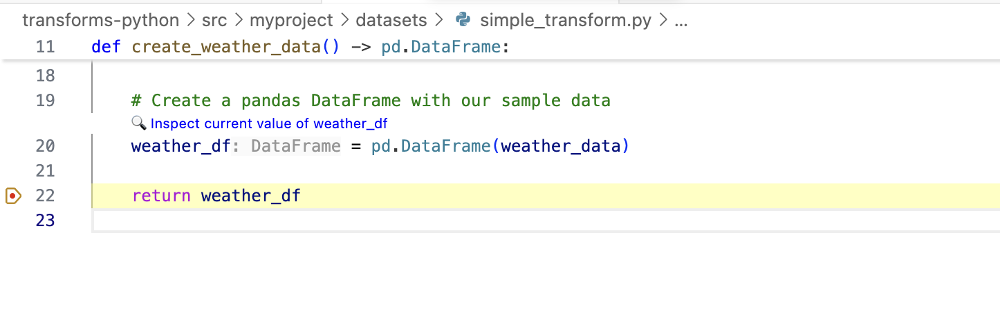
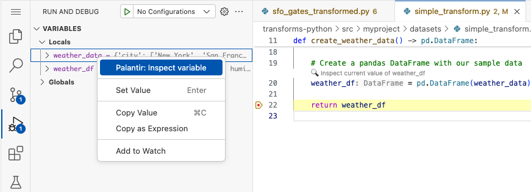
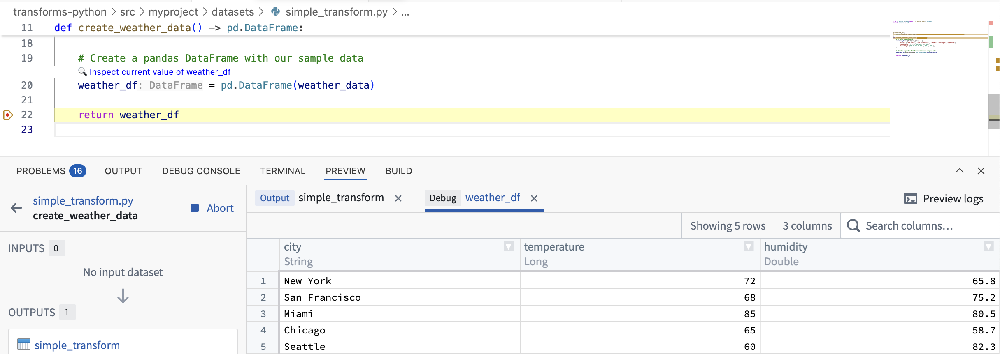

The Palantir extension for Visual Studio Code supports inspecting variables when debugging Python transforms. Complex data structures such as DataFrames can be loaded into the extension's Preview panel, allowing you to verify transform accuracy and identify issues before initializing a build.
To use debugging features with the Palantir extension for Visual Studio Code, open a Python file containing a transform. Set at least one breakpoint in your code to pause execution when that code is executed. When the breakpoint is reached, Visual Studio Code's Debug panel will open automatically and display the variables currently in scope.
To start a debug session, select Debug above the transform.

When a breakpoint is reached in your debugging session, you can inspect supported variables using the Preview panel through the following two methods:


Inspecting a variable will load it into the extension's Preview panel. You can then view the variable's contents and use the Preview panel's features to explore the data, such as viewing column statistics.
